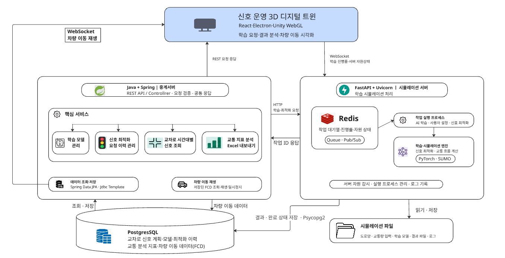

관리자 웹과 Java 서버
웹에서 학습 조건을 설정하고 결과를 조회합니다. Java 서버는 AI/Custom 요청을 구분하고, Python 작업 ID를 모델·실행 이력과 연결합니다.
백엔드 개발 포트폴리오
교통신호 최적화 결과를 조회하고 Unity에서 비교 재생할 수 있도록, Python 연산 서버와 클라이언트를 연결하는 Java/Spring 중계 서버를 개발했습니다.
01
시스템 아키텍처
강화학습으로 교차로 신호 계획을 최적화하고, SUMO 시뮬레이션으로 기존 계획과 차량 흐름을 비교합니다. Java 중계 서버는 관리자 웹의 요청을 Python 서버에 전달하고, 실행 결과를 조회 API와 Unity 재생 데이터로 제공합니다.

웹에서 학습 조건을 설정하고 결과를 조회합니다. Java 서버는 AI/Custom 요청을 구분하고, Python 작업 ID를 모델·실행 이력과 연결합니다.
강화학습과 SUMO 시뮬레이션을 수행합니다. Java 서버는 PostgreSQL에 저장된 모델 정보와 실행별 기존·최적화 결과를 조회합니다.
동일 시점의 차량 위치를 WebSocket으로 전달해 두 시뮬레이션을 나란히 재생합니다. 분석 지표와 신호 계획은 JSON·Excel로 제공합니다.
담당 업무 — 학습·최적화 요청 중계, 실행 이력 조회·삭제, 시간대별 신호 계획 변환, 차량 위치 전송과 재생 제어, Excel 보고서와 API 공통 처리를 담당했습니다.
팀 구성 — Java 백엔드 / Python 연산 서버 / Unity 클라이언트 / 관리자 웹
학습 조건 검증
모델 정보 저장
Python 학습·최적화 호출
작업 ID와 상태 저장
실행 이력 연결
기존·최적화 결과 조회
시간대별 신호 계획
차량 위치·분석 지표
Unity 비교 재생
웹 조회·Excel 다운로드
Java 서버가 담당한 중계·조회 흐름입니다. 학습 요청 등록과 학습 완료는 별도 상태로 다룹니다.
02
백엔드 구조
고정된 모델·이력 데이터와 실행별 결과 데이터를 구분해 조회합니다. 클라이언트에 필요한 정보를 모아 전달하고, 응답 형식과 요청 추적 정보를 공통으로 관리했습니다.
모델 정보를 먼저 저장하고 생성된 ID로 Python 서버에 학습을 요청했습니다. 화면에는 등록 응답을 먼저 반환하고, Python 응답 콜백에서 작업 ID와 상태를 갱신했습니다.
처리 방식WebClient.subscribe()로 요청하며, 작업 ID 수신을 학습 완료와 구분합니다.
최적화 목록에서 파일명을 모아 중복을 제거하고 IN 조건으로 조회했습니다. 파일명을 키로 하는 Map에 결과를 담아 각 실행 정보와 연결했습니다.
처리 방식실행 목록 조회 1회 + 파일 정보 조회 최대 1회. 파일명이 없으면 두 번째 조회를 생략합니다.
공통 응답 객체에 코드·메시지·결과·traceId·생성 시각을 담았습니다. Servlet Filter에서 요청별 UUID를 MDC에 저장하고, 요청이 끝나면 finally에서 제거했습니다.
처리 방식ResponseApi<T>와 @RestControllerAdvice를 사용하고, 오류 상세는 로그에 남깁니다.
시간대별·교차로별 지표와 신호 변경 내역을 집계했습니다. Apache POI로 시트를 나누고, 기존 값과 최적화 값을 함께 배치해 비교할 수 있도록 했습니다.
처리 방식15분 단위 종합 지표 / 교차로별 지표 / 신호 변경 / 황색·전적색 시트로 구성합니다.
학습 이력의 검색 조건은 JPA Specification에 모았습니다. 입력된 조건만 쿼리에 추가하고, 목록 조회와 전체 페이지 수 계산에 같은 조건 생성 코드를 사용했습니다.
ResponseApi<T>는 Java record로 정의하고 생성자에서 traceId와 시각을 채웠습니다. 지정한 ResponseException은 담겨 있는 코드·메시지와 HTTP 400으로 반환했습니다. 그 밖의 예외는 HTTP 500과 고정 안내 문구를 반환하고 상세 내용은 로그에 남겼습니다.
학습 요청의 모델명·교차로 목록·반복 횟수 등을 검사했습니다. 반복 횟수는 배치 크기의 배수인지 확인하고, Custom 요청에서는 오프셋과 현시 값도 검사했습니다.
| 시트 | 내용 |
|---|---|
| 15분 단위 종합 지표 | 시간대별 기존·최적화 결과 비교 |
| 교차로별 지표 | 교차로별 기존·최적화 결과 비교 |
| 신호 변경 | 최적화 전후 신호 계획 |
| 황색·전적색 | 신호별 황색시간과 전적색시간 |
사례 01
생성된 모델 ID를 Python 요청의 trainId에 설정
WebClient로 요청하고 화면에는 CREATED 응답
Python 응답 콜백에서 기존 모델 정보 업데이트
base_UUID와 optimum_UUID 테이블을 생성합니다. 고정 테이블과 달리 실행 정보에서 UUID를 찾아 결과 테이블명을 구성해야 했습니다.WebClient.subscribe()로 요청하고, 응답 콜백에서 작업 ID와 상태를 갱신했습니다.block()으로 Python 응답을 받은 뒤 결과 테이블과 집계 데이터를 지우고, 마지막으로 실행 정보를 삭제하도록 순서를 잡았습니다. 결과 테이블을 찾는 UUID가 실행 정보에 있기 때문입니다.// TrainService.createRLAIModel 일부 발췌
TrnModelInfoEntity entity = TrainModelMapper.toEntity(req);
trainRepository.save(entity);
String modelId = entity.getId();
req.setTrainId(modelId);
webClient.post()
.uri("http://localhost:8090/train/createAIModel")
.bodyValue(req)
.retrieve()
.bodyToMono(TrainResponse.class)
.subscribe(
resp -> updateModelByFastApi(modelId, resp),
err -> log.error("[FastAPI] 호출 실패", err)
);
return TrainFrontResponse.builder()
.status("CREATED")
.createdAt(entity.getMdlCrtDate())
.message("요청이 등록되었습니다. 모델 생성 중입니다.")
.build();Python 응답 전에는 모델 정보만 저장돼 있고 외부 작업 ID는 비어 있습니다. 현재 호출 실패 시에는 로그만 남기므로, 실패 상태 저장과 재시도 처리는 보완이 필요합니다.
// DynamicTableRepository 삭제 흐름 요약 (예외 처리 생략)
String optUuid = jdbcTemplate.queryForObject(
"SELECT opt_uuid FROM opt_result_metric_info WHERE id = ?", String.class, optiId);
// 저장된 UUID로 실행별 테이블명 구성
String sanitized = optUuid.replace("-", "_");
jdbcTemplate.execute("DROP TABLE IF EXISTS base_" + sanitized);
jdbcTemplate.execute("DROP TABLE IF EXISTS optimum_" + sanitized);
// 값 조건은 파라미터 바인딩 사용
jdbcTemplate.update("DELETE FROM metric_intersection_summary WHERE opt_uuid = ?", optUuid);테이블명은 파라미터로 바인딩할 수 없어 SQL 문자열에 넣었습니다. 현재는 UUID의 하이픈만 밑줄로 바꾸므로, 테이블명을 구성하기 전에 UUID 형식을 검증할 필요가 있습니다.
UUID 조회 오류는 원인을 구분하지 않고 반환하며, 테이블 삭제 오류는 로그만 남깁니다. 삭제 대상이 없는 경우와 DB 오류를 구분하고, Python 측 삭제 후 DB 처리가 실패했을 때의 재시도 기준도 정해야 합니다.
사례 02
Time of Day 데이터에서 시간대별 운영 시간 선택
A-1과 B-1을 서로 다른 신호 항목으로 조회
운영 시간 − 황색시간 − 전적색시간, 최솟값 0
Ring-Phase 형태의 복합 키로 운영 시간을 조회했습니다.Math.max(amVal, 0)을 적용해 응답 값의 최솟값을 0으로 제한했습니다.// TODService: 오전 계획을 Ring과 Phase별로 구분
Map<String, Integer> phaseToOprTimeAM = intersection.getSigTodPlans().stream()
.filter(p -> p.getOprPeriod() == 0)
.collect(Collectors.toMap(
p -> p.getRingType() + "-" + p.getPhaseNm(),
p -> p.getOprTm() != null ? p.getOprTm() : 0,
(a, b) -> a));같은 Ring·Phase가 중복되면 먼저 읽은 값을 유지합니다. 값이 서로 다른 중복 데이터까지 검증하는 처리는 포함하지 않았습니다.
// Ring A의 오전 녹색시간 계산 부분 발췌
int yellowTm = signal.getYlwTm() != null ? signal.getYlwTm() : 0;
int allRedTm = signal.getAllRedTm() != null ? signal.getAllRedTm() : 0;
int amBase = phaseToOprTimeAM.getOrDefault("A-" + signal.getPhaseNm(), 0);
int amVal = amBase - yellowTm - allRedTm;
// DTO를 만들 때 적용
.greenTimeAM(Math.max(amVal, 0))사례 03
시작 · 일시정지 · 재개 · 지정 시점 이동
기존·최적화 결과 테이블에 같은 currentTime 적용
time · payload1 · payload2를 함께 전송
FcdStreamService에 전달합니다. 서비스가 연결 세션, 재생 시각과 결과 테이블명을 보관합니다.currentTime의 차량 위치를 조회하고, 두 결과를 한 메시지에 담았습니다. 한쪽 결과만 없으면 해당 payload에 빈 JSON 문자열을 넣습니다.| 메시지 | 동작 |
|---|---|
| simulationTimeRequest | 전체 시뮬레이션 구간(시작·종료·길이) 응답 |
| fcdDataRequest | 스트리밍 시작 |
| pauseRequest | 현재 시점에서 일시정지 |
| resumeRequest | 멈춘 시점부터 재개 |
| fcdSetTimeRequest | 지정한 시점으로 이동 |
// FcdStreamService.startStream 흐름 요약 (예외 처리 생략)
// 새 전송 작업을 시작할 때 이전 작업 취소
if (streamingTask != null && !streamingTask.isCancelled()) {
streamingTask.cancel(true);
}
streamingTask = scheduler.scheduleAtFixedRate(() -> {
if (!isStreaming || session == null || !session.isOpen()) return;
String baseJson = queryFcdJson(baseTable, currentTime); // 기준안
String optJson = queryFcdJson(optimumTable, currentTime); // 최적화안
// 한쪽 결과가 없으면 빈 JSON 문자열로 전송
if (baseJson != null || optJson != null) {
session.sendMessage(new TextMessage(objectMapper.writeValueAsString(Map.of(
"type", "fcdDataResponse", "time", currentTime,
"payload1", baseJson != null ? baseJson : "{}",
"payload2", optJson != null ? optJson : "{}"))));
}
currentTime += 1.0; // 데이터 기준 시각은 1초씩
if (currentTime > duration) currentTime = 0.0;
}, 0, 150, TimeUnit.MILLISECONDS); // 실행 간격을 150ms로 설정실행 간격 150ms에 데이터 시각을 1초씩 증가시키므로, 조회·전송 지연이 없을 때 약 6.7배속에 해당하는 설정입니다. 실제 재생 속도를 측정한 수치는 아닙니다.